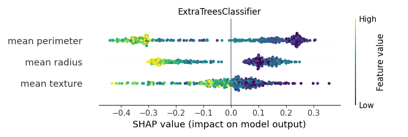

Note
Click here to download the full example code
02. Explainers Across ML Classifiers
This script serves as a practical guide to applying the SHAP library across a diverse set of machine learning algorithms. It highlights a critical concept in model interpretability: different model architectures require specific types of SHAP explainers for accurate and efficient computation. ü§ñ
The workflow includes:
Training Various Models: A suite of classifiers from scikit-learn and XGBoost are trained, including LogisticRegression, RandomForestClassifier, SVC, and XGBClassifier.
Applying Appropriate Explainers: The script demonstrates how to select and use different explainers, primarily contrasting the model-agnostic shap.KernelExplainer with the highly optimized explainer for tree-based models.
Visual Comparison: For each classifier, a SHAP summary plot is generated, allowing for a side-by-side comparison of feature importances as interpreted by each model.
This example is invaluable for understanding the practical nuances of using SHAP and for choosing the correct approach to explain the predictions of your specific machine learning model.


- 
Out:
C:\Users\kelda\Desktop\repositories\virtualenvs\venv-py311-psc\Lib\site-packages\sklearn\neural_network\_multilayer_perceptron.py:781: ConvergenceWarning:
Stochastic Optimizer: Maximum iterations (200) reached and the optimization hasn't converged yet.
<IPython.core.display.HTML object>
--------------------------------------------------------------------------------
Classifier: GaussianNB()
Kernel type: <class 'shap.explainers._kernel.KernelExplainer'>
0%| | 0/375 [00:00<?, ?it/s]
5%|######4 | 20/375 [00:00<00:01, 196.94it/s]
13%|###############1 | 47/375 [00:00<00:01, 230.93it/s]
22%|##########################1 | 81/375 [00:00<00:01, 278.80it/s]
34%|########################################9 | 128/375 [00:00<00:00, 352.92it/s]
49%|##########################################################5 | 183/375 [00:00<00:00, 423.14it/s]
63%|############################################################################1 | 238/375 [00:00<00:00, 464.40it/s]
78%|############################################################################################## | 294/375 [00:00<00:00, 493.48it/s]
93%|################################################################################################################ | 350/375 [00:00<00:00, 512.56it/s]
100%|########################################################################################################################| 375/375 [00:00<00:00, 437.46it/s]
[[-0.22973754 -0.19940695 -0.235981 ]
[ 0.13623621 0.04200439 0.15531092]
[-0.33313712 0.05794303 -0.32997588]
...
[-0.11342721 0.05598801 -0.15242103]
[ 0.13523148 0.01406085 0.14369843]
[-0.21293465 0.14266244 -0.26182637]]
base value: 0.6651264808594763
0%| | 0/375 [00:00<?, ?it/s]
15%|##################3 | 57/375 [00:00<00:00, 569.20it/s]
31%|####################################8 | 115/375 [00:00<00:00, 572.19it/s]
46%|#######################################################3 | 173/375 [00:00<00:00, 565.40it/s]
61%|#########################################################################6 | 230/375 [00:00<00:00, 557.54it/s]
76%|###########################################################################################5 | 286/375 [00:00<00:00, 554.49it/s]
91%|#############################################################################################################4 | 342/375 [00:00<00:00, 556.33it/s]
100%|########################################################################################################################| 375/375 [00:00<00:00, 554.24it/s]
--------------------------------------------------------------------------------
Classifier: LogisticRegression()
Kernel type: <class 'shap.explainers._kernel.KernelExplainer'>
0%| | 0/375 [00:00<?, ?it/s]
17%|####################6 | 64/375 [00:00<00:00, 637.03it/s]
35%|##########################################5 | 133/375 [00:00<00:00, 666.58it/s]
54%|################################################################3 | 201/375 [00:00<00:00, 669.17it/s]
72%|######################################################################################7 | 271/375 [00:00<00:00, 680.97it/s]
91%|#############################################################################################################1 | 341/375 [00:00<00:00, 685.34it/s]
100%|########################################################################################################################| 375/375 [00:00<00:00, 676.59it/s]
[[ 0.11120488 -0.19689306 -0.5442629 ]
[-0.2752 0.0349553 0.60978675]
[ 0.12507631 0.08030924 -0.39550171]
...
[ 0.01313251 0.03206775 -0.39872752]
[ 0.08174822 0.01639528 0.05909256]
[ 0.06414935 0.12182382 -0.4208023 ]]
base value: 0.6303307741664606
0%| | 0/375 [00:00<?, ?it/s]
18%|#####################9 | 68/375 [00:00<00:00, 679.12it/s]
37%|############################################4 | 139/375 [00:00<00:00, 693.20it/s]
56%|##################################################################8 | 209/375 [00:00<00:00, 677.50it/s]
74%|########################################################################################9 | 278/375 [00:00<00:00, 679.32it/s]
92%|##############################################################################################################7 | 346/375 [00:00<00:00, 677.16it/s]
100%|########################################################################################################################| 375/375 [00:00<00:00, 680.12it/s]
--------------------------------------------------------------------------------
Classifier: DecisionTreeClassifier(random_state=0)
Kernel type: <class 'shap.explainers._kernel.KernelExplainer'>
0%| | 0/375 [00:00<?, ?it/s]
19%|######################5 | 70/375 [00:00<00:00, 700.00it/s]
37%|############################################8 | 140/375 [00:00<00:00, 699.42it/s]
56%|###################################################################5 | 211/375 [00:00<00:00, 699.88it/s]
75%|#########################################################################################9 | 281/375 [00:00<00:00, 691.40it/s]
94%|################################################################################################################3 | 351/375 [00:00<00:00, 691.58it/s]
100%|########################################################################################################################| 375/375 [00:00<00:00, 692.93it/s]
[[ 0.035 -0.055 -0.62 ]
[-0.03333333 0.04666667 0.34666667]
[ 0.02666667 0.40166667 -0.06833333]
...
[ 0.02666667 -0.11333333 -0.55333333]
[-0.38333333 -0.04833333 -0.20833333]
[ 0.02666667 0.03666667 -0.70333333]]
base value: 0.6400000000000001
0%| | 0/375 [00:00<?, ?it/s]
17%|####################9 | 65/375 [00:00<00:00, 649.60it/s]
35%|#########################################6 | 130/375 [00:00<00:00, 648.47it/s]
53%|###############################################################3 | 198/375 [00:00<00:00, 661.12it/s]
71%|#####################################################################################7 | 268/375 [00:00<00:00, 676.42it/s]
90%|############################################################################################################1 | 338/375 [00:00<00:00, 684.32it/s]
100%|########################################################################################################################| 375/375 [00:00<00:00, 676.61it/s]
--------------------------------------------------------------------------------
Classifier: RandomForestClassifier(random_state=0)
Kernel type: <class 'shap.explainers._kernel.KernelExplainer'>
0%| | 0/375 [00:00<?, ?it/s]
2%|##9 | 9/375 [00:00<00:04, 87.34it/s]
5%|#####8 | 18/375 [00:00<00:04, 88.81it/s]
7%|#########1 | 28/375 [00:00<00:03, 89.16it/s]
10%|############ | 37/375 [00:00<00:03, 89.47it/s]
13%|###############2 | 47/375 [00:00<00:03, 90.31it/s]
15%|##################5 | 57/375 [00:00<00:03, 89.32it/s]
18%|#####################7 | 67/375 [00:00<00:03, 89.80it/s]
21%|######################### | 77/375 [00:00<00:03, 89.90it/s]
23%|###########################9 | 86/375 [00:00<00:03, 89.63it/s]
26%|###############################2 | 96/375 [00:01<00:03, 90.98it/s]
28%|##################################2 | 106/375 [00:01<00:02, 91.48it/s]
31%|#####################################4 | 116/375 [00:01<00:02, 91.48it/s]
34%|########################################6 | 126/375 [00:01<00:02, 92.60it/s]
36%|###########################################8 | 136/375 [00:01<00:02, 93.12it/s]
39%|###############################################1 | 146/375 [00:01<00:02, 94.08it/s]
42%|##################################################3 | 156/375 [00:01<00:02, 94.16it/s]
44%|#####################################################5 | 166/375 [00:01<00:02, 93.62it/s]
47%|########################################################7 | 176/375 [00:01<00:02, 94.07it/s]
50%|############################################################ | 186/375 [00:02<00:02, 93.36it/s]
52%|###############################################################2 | 196/375 [00:02<00:01, 93.30it/s]
55%|##################################################################4 | 206/375 [00:02<00:01, 93.62it/s]
58%|#####################################################################6 | 216/375 [00:02<00:01, 92.76it/s]
60%|########################################################################9 | 226/375 [00:02<00:01, 88.13it/s]
63%|###########################################################################8 | 235/375 [00:02<00:01, 88.55it/s]
65%|##############################################################################7 | 244/375 [00:02<00:01, 87.42it/s]
67%|#################################################################################6 | 253/375 [00:02<00:01, 87.41it/s]
70%|####################################################################################5 | 262/375 [00:02<00:01, 86.66it/s]
72%|#######################################################################################4 | 271/375 [00:02<00:01, 86.53it/s]
75%|##########################################################################################3 | 280/375 [00:03<00:01, 86.49it/s]
77%|#############################################################################################2 | 289/375 [00:03<00:00, 86.75it/s]
79%|################################################################################################1 | 298/375 [00:03<00:00, 86.58it/s]
82%|################################################################################################### | 307/375 [00:03<00:00, 86.83it/s]
85%|######################################################################################################2 | 317/375 [00:03<00:00, 89.33it/s]
87%|#########################################################################################################5 | 327/375 [00:03<00:00, 90.85it/s]
90%|############################################################################################################7 | 337/375 [00:03<00:00, 91.65it/s]
93%|###############################################################################################################9 | 347/375 [00:03<00:00, 92.15it/s]
95%|###################################################################################################################1 | 357/375 [00:03<00:00, 91.96it/s]
98%|######################################################################################################################4 | 367/375 [00:04<00:00, 91.59it/s]
100%|#########################################################################################################################| 375/375 [00:04<00:00, 90.56it/s]
[[-0.21635 -0.058 -0.36585 ]
[ 0.07893333 0.06458333 0.20628333]
[-0.03131667 0.26613333 -0.16501667]
...
[-0.01585 -0.04245 -0.3219 ]
[-0.08548333 -0.14373333 -0.07098333]
[-0.2299 0.0984 -0.3787 ]]
base value: 0.6402000000000001
0%| | 0/375 [00:00<?, ?it/s]
2%|##9 | 9/375 [00:00<00:04, 89.73it/s]
5%|#####8 | 18/375 [00:00<00:04, 82.31it/s]
7%|########7 | 27/375 [00:00<00:04, 73.42it/s]
9%|###########3 | 35/375 [00:00<00:04, 74.69it/s]
12%|##############3 | 44/375 [00:00<00:04, 78.14it/s]
14%|#################2 | 53/375 [00:00<00:03, 80.82it/s]
17%|####################1 | 62/375 [00:00<00:03, 83.03it/s]
19%|#######################4 | 72/375 [00:00<00:03, 85.81it/s]
22%|##########################6 | 82/375 [00:00<00:03, 87.42it/s]
24%|#############################6 | 91/375 [00:01<00:03, 86.00it/s]
27%|################################2 | 100/375 [00:01<00:03, 83.38it/s]
29%|###################################4 | 110/375 [00:01<00:03, 85.54it/s]
32%|######################################3 | 119/375 [00:01<00:02, 86.73it/s]
34%|#########################################6 | 129/375 [00:01<00:02, 87.94it/s]
37%|############################################8 | 139/375 [00:01<00:02, 89.35it/s]
40%|################################################ | 149/375 [00:01<00:02, 90.26it/s]
42%|###################################################3 | 159/375 [00:01<00:02, 90.86it/s]
45%|######################################################5 | 169/375 [00:01<00:02, 90.84it/s]
48%|#########################################################7 | 179/375 [00:02<00:02, 91.56it/s]
50%|############################################################9 | 189/375 [00:02<00:02, 92.39it/s]
53%|################################################################2 | 199/375 [00:02<00:01, 93.14it/s]
56%|###################################################################4 | 209/375 [00:02<00:01, 91.85it/s]
58%|######################################################################6 | 219/375 [00:02<00:01, 89.99it/s]
61%|#########################################################################8 | 229/375 [00:02<00:01, 90.00it/s]
64%|#############################################################################1 | 239/375 [00:02<00:01, 90.29it/s]
66%|################################################################################3 | 249/375 [00:02<00:01, 89.74it/s]
69%|###################################################################################5 | 259/375 [00:02<00:01, 90.57it/s]
72%|######################################################################################7 | 269/375 [00:03<00:01, 91.05it/s]
74%|########################################################################################## | 279/375 [00:03<00:01, 90.69it/s]
77%|#############################################################################################2 | 289/375 [00:03<00:00, 90.95it/s]
80%|################################################################################################4 | 299/375 [00:03<00:00, 92.19it/s]
82%|###################################################################################################7 | 309/375 [00:03<00:00, 92.32it/s]
85%|######################################################################################################9 | 319/375 [00:03<00:00, 92.91it/s]
88%|##########################################################################################################1 | 329/375 [00:03<00:00, 93.82it/s]
90%|#############################################################################################################3 | 339/375 [00:03<00:00, 94.16it/s]
93%|################################################################################################################6 | 349/375 [00:03<00:00, 94.22it/s]
96%|###################################################################################################################8 | 359/375 [00:04<00:00, 94.22it/s]
98%|####################################################################################################################### | 369/375 [00:04<00:00, 93.69it/s]
100%|#########################################################################################################################| 375/375 [00:04<00:00, 89.26it/s]
--------------------------------------------------------------------------------
Classifier: XGBClassifier(base_score=None, booster=None, callbacks=None,
colsample_bylevel=None, colsample_bynode=None,
colsample_bytree=None, device=None, early_stopping_rounds=None,
enable_categorical=False, eta=0.05, eval_metric=None,
feature_types=None, feature_weights=None, gamma=0.2,
grow_policy=None, importance_type=None,
interaction_constraints=None, learning_rate=None, max_bin=None,
max_cat_threshold=None, max_cat_to_onehot=None,
max_delta_step=None, max_depth=4, max_leaves=None,
min_child_weight=0.005, missing=nan, monotone_constraints=None,
multi_strategy=None, n_estimators=100, n_jobs=None, ...)
Kernel type: <class 'shap.explainers._tree.TreeExplainer'>
[[-0.26615972 -0.68707205 -4.41828418]
[-0.48923345 0.89701019 3.28383803]
[ 0.25992588 2.43031889 -3.09868905]
...
[ 0.73170752 -0.09166955 -2.45801772]
[ 0.14106127 -0.04692391 0.63537647]
[ 0.07274038 1.37873462 -3.73005894]]
base value: 0.8027434151840483
--------------------------------------------------------------------------------
Classifier: MLPClassifier()
Kernel type: <class 'shap.explainers._kernel.KernelExplainer'>
0%| | 0/375 [00:00<?, ?it/s]
14%|#################4 | 54/375 [00:00<00:00, 533.96it/s]
29%|###################################2 | 110/375 [00:00<00:00, 545.40it/s]
44%|#####################################################1 | 166/375 [00:00<00:00, 547.06it/s]
59%|######################################################################7 | 221/375 [00:00<00:00, 545.87it/s]
74%|########################################################################################3 | 276/375 [00:00<00:00, 545.40it/s]
88%|#########################################################################################################9 | 331/375 [00:00<00:00, 545.11it/s]
100%|########################################################################################################################| 375/375 [00:00<00:00, 537.94it/s]
[[ 0.11264916 0.42398509 -0.20861284]
[-0.15303438 -0.15132639 0.44112841]
[ 0.08128618 -0.11085575 -0.21890264]
...
[ 0.0403443 -0.06015813 -0.13852486]
[-0.01900931 0.00594019 0.06355474]
[ 0.05387914 -0.19066848 -0.19508665]]
base value: 0.5479291430343911
0%| | 0/375 [00:00<?, ?it/s]
14%|################7 | 52/375 [00:00<00:00, 518.63it/s]
28%|#################################2 | 104/375 [00:00<00:00, 512.56it/s]
42%|##################################################5 | 158/375 [00:00<00:00, 524.22it/s]
56%|###################################################################5 | 211/375 [00:00<00:00, 517.18it/s]
71%|#####################################################################################1 | 266/375 [00:00<00:00, 528.49it/s]
86%|####################################################################################################### | 322/375 [00:00<00:00, 535.49it/s]
100%|########################################################################################################################| 375/375 [00:00<00:00, 528.29it/s]
--------------------------------------------------------------------------------
Classifier: SVC(probability=True)
Kernel type: <class 'shap.explainers._kernel.KernelExplainer'>
0%| | 0/375 [00:00<?, ?it/s]
3%|###2 | 10/375 [00:00<00:03, 91.86it/s]
6%|######8 | 21/375 [00:00<00:03, 99.15it/s]
9%|##########6 | 33/375 [00:00<00:03, 105.78it/s]
12%|##############8 | 46/375 [00:00<00:02, 113.65it/s]
16%|################### | 59/375 [00:00<00:02, 118.31it/s]
19%|#######################5 | 73/375 [00:00<00:02, 123.67it/s]
23%|############################ | 87/375 [00:00<00:02, 128.01it/s]
27%|################################3 | 101/375 [00:00<00:02, 130.52it/s]
31%|####################################8 | 115/375 [00:00<00:02, 128.11it/s]
34%|########################################9 | 128/375 [00:01<00:01, 126.67it/s]
38%|#############################################4 | 142/375 [00:01<00:01, 129.05it/s]
42%|#################################################9 | 156/375 [00:01<00:01, 131.87it/s]
45%|######################################################4 | 170/375 [00:01<00:01, 131.93it/s]
49%|##########################################################8 | 184/375 [00:01<00:01, 133.12it/s]
53%|###############################################################6 | 199/375 [00:01<00:01, 136.07it/s]
57%|####################################################################1 | 213/375 [00:01<00:01, 135.96it/s]
61%|########################################################################6 | 227/375 [00:01<00:01, 136.28it/s]
64%|#############################################################################1 | 241/375 [00:01<00:00, 134.00it/s]
68%|#################################################################################6 | 255/375 [00:01<00:00, 133.63it/s]
72%|###################################################################################### | 269/375 [00:02<00:00, 135.44it/s]
76%|##########################################################################################8 | 284/375 [00:02<00:00, 138.03it/s]
80%|###############################################################################################6 | 299/375 [00:02<00:00, 139.50it/s]
83%|####################################################################################################1 | 313/375 [00:02<00:00, 138.03it/s]
87%|########################################################################################################6 | 327/375 [00:02<00:00, 135.36it/s]
91%|#############################################################################################################4 | 342/375 [00:02<00:00, 137.21it/s]
95%|##################################################################################################################2 | 357/375 [00:02<00:00, 139.30it/s]
99%|####################################################################################################################### | 372/375 [00:02<00:00, 140.37it/s]
100%|########################################################################################################################| 375/375 [00:02<00:00, 131.54it/s]
[[-0.0023896 -0.14034342 -0.48317843]
[ 0.00171304 0.03028929 0.33301027]
[-0.00316234 0.04337595 -0.4879076 ]
...
[-0.00146474 0.03445609 -0.30158501]
[ 0.00175997 0.00783246 0.1961719 ]
[-0.00322586 0.10165588 -0.40620894]]
base value: 0.6288006131620403
0%| | 0/375 [00:00<?, ?it/s]
3%|####1 | 13/375 [00:00<00:02, 129.31it/s]
7%|########7 | 27/375 [00:00<00:02, 132.24it/s]
11%|#############5 | 42/375 [00:00<00:02, 137.15it/s]
15%|##################3 | 57/375 [00:00<00:02, 139.42it/s]
19%|######################9 | 71/375 [00:00<00:02, 137.96it/s]
23%|###########################4 | 85/375 [00:00<00:02, 134.97it/s]
27%|################################ | 100/375 [00:00<00:02, 137.47it/s]
31%|####################################8 | 115/375 [00:00<00:01, 139.60it/s]
35%|#########################################6 | 130/375 [00:00<00:01, 140.58it/s]
39%|##############################################4 | 145/375 [00:01<00:01, 141.70it/s]
43%|###################################################2 | 160/375 [00:01<00:01, 142.02it/s]
47%|######################################################## | 175/375 [00:01<00:01, 142.27it/s]
51%|############################################################8 | 190/375 [00:01<00:01, 142.81it/s]
55%|#################################################################6 | 205/375 [00:01<00:01, 142.70it/s]
59%|######################################################################4 | 220/375 [00:01<00:01, 143.16it/s]
63%|###########################################################################2 | 235/375 [00:01<00:00, 143.48it/s]
67%|################################################################################ | 250/375 [00:01<00:00, 142.47it/s]
71%|####################################################################################8 | 265/375 [00:01<00:00, 143.00it/s]
75%|#########################################################################################6 | 280/375 [00:01<00:00, 142.55it/s]
79%|##############################################################################################3 | 295/375 [00:02<00:00, 138.96it/s]
82%|##################################################################################################8 | 309/375 [00:02<00:00, 136.51it/s]
86%|#######################################################################################################3 | 323/375 [00:02<00:00, 137.38it/s]
90%|############################################################################################################1 | 338/375 [00:02<00:00, 139.02it/s]
94%|################################################################################################################9 | 353/375 [00:02<00:00, 140.57it/s]
98%|#####################################################################################################################7 | 368/375 [00:02<00:00, 141.66it/s]
100%|########################################################################################################################| 375/375 [00:02<00:00, 140.30it/s]
--------------------------------------------------------------------------------
Classifier: ExtraTreesClassifier()
Kernel type: <class 'shap.explainers._kernel.KernelExplainer'>
0%| | 0/375 [00:00<?, ?it/s]
2%|##9 | 9/375 [00:00<00:04, 84.83it/s]
5%|#####8 | 18/375 [00:00<00:04, 83.93it/s]
7%|########7 | 27/375 [00:00<00:04, 84.01it/s]
10%|###########7 | 36/375 [00:00<00:04, 83.71it/s]
12%|##############6 | 45/375 [00:00<00:04, 81.04it/s]
14%|#################5 | 54/375 [00:00<00:04, 80.20it/s]
17%|####################4 | 63/375 [00:00<00:03, 81.43it/s]
19%|#######################4 | 72/375 [00:00<00:03, 82.46it/s]
22%|##########################3 | 81/375 [00:00<00:03, 82.93it/s]
24%|#############################2 | 90/375 [00:01<00:03, 81.86it/s]
26%|################################2 | 99/375 [00:01<00:03, 81.85it/s]
29%|##################################8 | 108/375 [00:01<00:03, 82.95it/s]
31%|#####################################7 | 117/375 [00:01<00:03, 83.30it/s]
34%|########################################6 | 126/375 [00:01<00:02, 84.25it/s]
36%|###########################################5 | 135/375 [00:01<00:02, 84.70it/s]
38%|##############################################4 | 144/375 [00:01<00:02, 85.48it/s]
41%|#################################################3 | 153/375 [00:01<00:02, 85.55it/s]
43%|####################################################2 | 162/375 [00:01<00:02, 82.64it/s]
46%|#######################################################1 | 171/375 [00:02<00:02, 81.21it/s]
48%|########################################################## | 180/375 [00:02<00:02, 81.83it/s]
50%|############################################################9 | 189/375 [00:02<00:02, 82.73it/s]
53%|###############################################################8 | 198/375 [00:02<00:02, 84.31it/s]
55%|##################################################################7 | 207/375 [00:02<00:01, 84.72it/s]
58%|#####################################################################6 | 216/375 [00:02<00:01, 85.02it/s]
60%|########################################################################6 | 225/375 [00:02<00:01, 84.93it/s]
62%|###########################################################################5 | 234/375 [00:02<00:01, 84.20it/s]
65%|##############################################################################4 | 243/375 [00:02<00:01, 84.18it/s]
67%|#################################################################################3 | 252/375 [00:03<00:01, 85.01it/s]
70%|####################################################################################2 | 261/375 [00:03<00:01, 85.22it/s]
72%|#######################################################################################1 | 270/375 [00:03<00:01, 85.37it/s]
74%|########################################################################################## | 279/375 [00:03<00:01, 84.99it/s]
77%|############################################################################################9 | 288/375 [00:03<00:01, 85.15it/s]
79%|###############################################################################################8 | 297/375 [00:03<00:00, 85.56it/s]
82%|##################################################################################################7 | 306/375 [00:03<00:00, 86.10it/s]
84%|#####################################################################################################6 | 315/375 [00:03<00:00, 85.98it/s]
86%|########################################################################################################5 | 324/375 [00:03<00:00, 86.61it/s]
89%|###########################################################################################################4 | 333/375 [00:03<00:00, 86.35it/s]
91%|##############################################################################################################3 | 342/375 [00:04<00:00, 85.07it/s]
94%|#################################################################################################################2 | 351/375 [00:04<00:00, 85.26it/s]
96%|####################################################################################################################1 | 360/375 [00:04<00:00, 84.67it/s]
98%|####################################################################################################################### | 369/375 [00:04<00:00, 84.93it/s]
100%|#########################################################################################################################| 375/375 [00:04<00:00, 84.13it/s]
[[-0.21198333 -0.14828333 -0.27973333]
[ 0.1073 0.055 0.1977 ]
[ 0.13106667 0.31476667 -0.08583333]
...
[-0.16245 -0.1147 -0.36285 ]
[-0.21978333 -0.18668333 -0.23353333]
[-0.23011667 -0.01561667 -0.39426667]]
base value: 0.6400000000000001
0%| | 0/375 [00:00<?, ?it/s]
2%|##9 | 9/375 [00:00<00:04, 87.38it/s]
5%|#####8 | 18/375 [00:00<00:04, 85.43it/s]
7%|########7 | 27/375 [00:00<00:04, 85.12it/s]
10%|###########7 | 36/375 [00:00<00:03, 85.20it/s]
12%|##############6 | 45/375 [00:00<00:03, 85.69it/s]
14%|#################5 | 54/375 [00:00<00:03, 85.11it/s]
17%|####################4 | 63/375 [00:00<00:03, 85.22it/s]
19%|#######################4 | 72/375 [00:00<00:03, 85.12it/s]
22%|##########################3 | 81/375 [00:00<00:03, 85.56it/s]
24%|#############################2 | 90/375 [00:01<00:03, 86.29it/s]
26%|################################2 | 99/375 [00:01<00:03, 86.88it/s]
29%|##################################8 | 108/375 [00:01<00:03, 86.53it/s]
31%|#####################################7 | 117/375 [00:01<00:02, 86.44it/s]
34%|########################################6 | 126/375 [00:01<00:02, 87.23it/s]
36%|###########################################5 | 135/375 [00:01<00:02, 87.17it/s]
38%|##############################################4 | 144/375 [00:01<00:02, 86.98it/s]
41%|#################################################3 | 153/375 [00:01<00:02, 86.77it/s]
43%|####################################################2 | 162/375 [00:01<00:02, 86.20it/s]
46%|#######################################################1 | 171/375 [00:01<00:02, 86.27it/s]
48%|########################################################## | 180/375 [00:02<00:02, 85.85it/s]
50%|############################################################9 | 189/375 [00:02<00:02, 86.00it/s]
53%|###############################################################8 | 198/375 [00:02<00:02, 86.41it/s]
55%|##################################################################7 | 207/375 [00:02<00:01, 86.17it/s]
58%|#####################################################################6 | 216/375 [00:02<00:01, 85.79it/s]
60%|########################################################################6 | 225/375 [00:02<00:01, 85.52it/s]
62%|###########################################################################5 | 234/375 [00:02<00:01, 84.85it/s]
65%|##############################################################################4 | 243/375 [00:02<00:01, 84.85it/s]
67%|#################################################################################3 | 252/375 [00:02<00:01, 86.32it/s]
70%|####################################################################################2 | 261/375 [00:03<00:01, 86.58it/s]
72%|#######################################################################################1 | 270/375 [00:03<00:01, 86.88it/s]
74%|########################################################################################## | 279/375 [00:03<00:01, 85.97it/s]
77%|############################################################################################9 | 288/375 [00:03<00:01, 85.89it/s]
79%|###############################################################################################8 | 297/375 [00:03<00:00, 85.56it/s]
82%|##################################################################################################7 | 306/375 [00:03<00:00, 86.09it/s]
84%|#####################################################################################################6 | 315/375 [00:03<00:00, 86.23it/s]
86%|########################################################################################################5 | 324/375 [00:03<00:00, 86.82it/s]
89%|###########################################################################################################4 | 333/375 [00:03<00:00, 86.89it/s]
91%|##############################################################################################################3 | 342/375 [00:03<00:00, 86.29it/s]
94%|#################################################################################################################2 | 351/375 [00:04<00:00, 86.36it/s]
96%|####################################################################################################################1 | 360/375 [00:04<00:00, 85.67it/s]
98%|####################################################################################################################### | 369/375 [00:04<00:00, 85.44it/s]
100%|#########################################################################################################################| 375/375 [00:04<00:00, 86.03it/s]
C:\Users\kelda\Desktop\repositories\github\python-spare-code\main\examples\shap\plot_main02.py:196: UserWarning:
FigureCanvasAgg is non-interactive, and thus cannot be shown
28 # Generic
29 import numpy as np
30 import pandas as pd
31 import matplotlib.pyplot as plt
32
33 # Sklearn
34 from sklearn.model_selection import train_test_split
35 from sklearn.datasets import load_iris
36 from sklearn.datasets import load_breast_cancer
37 from sklearn.naive_bayes import GaussianNB
38 from sklearn.linear_model import LogisticRegression
39 from sklearn.tree import DecisionTreeClassifier
40 from sklearn.ensemble import RandomForestClassifier
41 from sklearn.svm import SVC
42 from sklearn.ensemble import ExtraTreesClassifier
43 from sklearn.neural_network import MLPClassifier
44 from sklearn.calibration import CalibratedClassifierCV
45
46 # Xgboost
47 from xgboost import XGBClassifier
48
49 # ----------------------------------------
50 # Load data
51 # ----------------------------------------
52 # Seed
53 seed = 0
54
55 # Load dataset
56 bunch = load_iris()
57 bunch = load_breast_cancer()
58 features = list(bunch['feature_names'])
59
60 # Create DataFrame
61 data = pd.DataFrame(data=np.c_[bunch['data'], bunch['target']],
62 columns=features + ['target'])
63
64 # Create X, y
65 X = data[bunch['feature_names']]
66 y = data['target']
67
68 # Filter
69 X = X.iloc[:500, :3]
70 y = y.iloc[:500]
71
72
73 # Split dataset
74 X_train, X_test, y_train, y_test = \
75 train_test_split(X, y, random_state=seed)
76
77
78 # ----------------------------------------
79 # Classifiers
80 # ----------------------------------------
81 # Train classifier
82 gnb = GaussianNB()
83 llr = LogisticRegression()
84 dtc = DecisionTreeClassifier(random_state=seed)
85 rfc = RandomForestClassifier(random_state=seed)
86 xgb = XGBClassifier(
87 min_child_weight=0.005,
88 eta= 0.05, gamma= 0.2,
89 max_depth= 4,
90 n_estimators= 100)
91 ann = MLPClassifier()
92 svm = SVC(probability=True)
93 etc = ExtraTreesClassifier()
94
95 # List
96 clfs = [gnb, llr, dtc, rfc, xgb, ann, svm, etc]
97 #clfs = [svm, dtc]
98
99 # Fit
100 for clf in clfs:
101 clf.fit(X_train, y_train)
102
103 # ----------------------------------------
104 # Find shap values
105 # ----------------------------------------
106 # Possible explainers:
107 # - shap.DeepExplainer
108 # - shap.KernelExplainer
109 # - shap.TreeExplainer
110 # - shap.LinearExplainer
111 # - shap.Exact
112 # - shap.Explainer
113
114 # Import
115 import shap
116
117 # Initialise
118 shap.initjs()
119
120
121 def predict_proba(x):
122 return clf.predict_proba(x)[:, 1]
123
124 # Loop
125 for clf in clfs:
126
127 try:
128 # Show classifier
129 print("\n" + '-'*80)
130 print("Classifier: %s" % clf)
131
132 """
133 # Create shap explainer
134 if isinstance(clf,
135 (DecisionTreeClassifier,
136 ExtraTreesClassifier,
137 XGBClassifier)):
138 # Set Tree explainer
139 explainer = shap.TreeExplainer(clf)
140 elif isinstance(clf, LogisticRegression):
141 # Masker
142 masker = shap.maskers.Independent(X_train, max_samples=100)
143 # Set Linear explainer
144 #explainer = shap.LinearExplainer(predict_proba)#, masker)
145 explainer = shap.Explainer(predict_proba, masker)
146 elif isinstance(clf, int):
147 # Set NN explainer
148 explainer = shap.DeepExplainer(clf)
149 else:
150 # Works for [svc]
151 # If too many examples (pass aux to explainer).
152 aux = shap.sample(X_train, 100)
153 # Set generic kernel explainer
154 explainer = shap.KernelExplainer(predict_proba, aux)
155 """
156
157 # Sample to speed up processing.
158 sample = shap.sample(X_train, 100)
159
160 if isinstance(clf, XGBClassifier):
161 # Works for [llr, dtc, etc, xgb]
162 explainer = shap.Explainer(clf, sample)
163 else:
164 # Works for all but [xgb]
165 explainer = shap.KernelExplainer(predict_proba, sample)
166
167 # Show kernel type
168 print("Kernel type: %s" % type(explainer))
169
170 # Get shap values
171 #shap_values = explainer(X)
172 shap_values = explainer.shap_values(X_train)
173
174 print(shap_values)
175
176
177 # Show information
178 print("base value: %s" % explainer.expected_value)
179 #print("shap_values: %s" % str(shap_values.shape))
180
181 # Summary plot
182 plt.figure()
183 plot_summary = shap.summary_plot(
184 explainer.shap_values(X_train),
185 X_train, cmap='viridis', show=False
186 )
187
188 # Format
189 plt.title(clf.__class__.__name__)
190 plt.tight_layout()
191
192 except Exception as e:
193 print("Error: %s" % e)
194
195 # Show
196 plt.show()
Total running time of the script: ( 0 minutes 31.244 seconds)